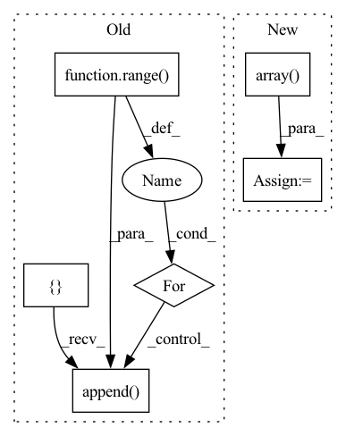

Pattern ID :26943
Before Change
return [np.sum([v for _, v in pp.items()]) for pp in pot]
def _make_indeces(self, natoms, excludepairs):
allvsall_indeces = []
for i in range( natoms) :
for j in range(i + 1, natoms):
if [i, j] in excludepairs or [j, i] in excludepairs:
continue
allvsall_indeces.append( [i, j])
ava_idx = torch.tensor(allvsall_indeces).to(self.device)
return ava_idx
After Change
def _make_indeces(self, natoms, excludepairs):
fullmat = np.full((natoms, natoms), True, dtype=bool)
if len(excludepairs):
excludepairs = np.array( excludepairs)
fullmat[excludepairs[:, 0], excludepairs[:, 1]] = False
fullmat[excludepairs[:, 1], excludepairs[:, 0]] = False
fullmat = np.triu(fullmat, +1)
allvsall_indeces = np.vstack(np.where(fullmat)).T
ava_idx = torch.tensor(allvsall_indeces).to(self.device)
return ava_idx
In pattern: SUPERPATTERN
Frequency: 3
Non-data size: 6
Instances Fragment ID: 80333241
Project Name: torchmd/torchmd
Commit Name: 3b9546b4305fd06e35b22e29940fe3d7f67bce86
Time: 2020-05-21
Author: stefdoerr@gmail.com
File Name: torchmd/forces.py
M Class Name: Forces
N Class Name: Forces
M Method Name: _make_indeces(3)
N Method Name: _make_indeces(3)
M Parent Class:
N Parent Class:
M File Name: torchmd/forces.py
N File Name: torchmd/forces.py
M Start Line: 175
M End Line: 182
N Start Line: 242
N End Line: 248
Before Change
h5["nbas"] = mol.nbas // number of unique ao (e.g. px,py,px -> p)
h5["nao"] = mol.nao // total number of ao
nshells = []
for iat in range( mol.natm) :
nshells.append( mol.atom_nshells(iat))
bas_coeff, bas_exp = [], []
index_ctr = []
bas_n, bas_l, bas_m = [], [], []After Change
for expnt, l in zip(bas_exp, bas_l):
bas_norm.append(mol.gto_norm(l,expnt))
bas_kr = np.array( bas_n) - np.array(bas_l) - 1
h5.create_dataset("nshells", data=nshells)
h5.create_dataset("index_ctr", data=index_ctr) Fragment ID: 80333240
Project Name: nlesc-jcer/qmctorch
Commit Name: 13ac04175163cc5ee60cfb546b738ebdbce9df09
Time: 2020-04-13
Author: nicolas.gm.renaud@gmail.com
File Name: deepqmc/wavefunction/calculator/pyscf.py
M Class Name: CalculatorPySCF
N Class Name: CalculatorPySCF
M Method Name: save_data(4)
N Method Name: save_data(4)
M Parent Class: CalculatorBase
N Parent Class: CalculatorBase
M File Name: deepqmc/wavefunction/calculator/pyscf.py
N File Name: deepqmc/wavefunction/calculator/pyscf.py
M Start Line: 61
M End Line: 81
N Start Line: 59
N End Line: 124
Before Change
weights = [0, 0, 0, 0, 0]
weights[n_gram-1] = 1
weights = tuple(weights)
self_bleu_score = []
for idx in range( len(generate_corpus)) :
candidate = generate_corpus[idx]
reference_corpus = generate_corpus[:idx] + generate_corpus[idx+1:]
self_bleu_score.append( sentence_bleu(reference_corpus, candidate, weights,
smoothing_function=SmoothingFunction().method1))
return sum(self_bleu_score) / len(self_bleu_score)
Function name and function mapper.After Change
results = []
for n_gram in n_grams:
score = np.array( scores[n_gram])
results.append(score.mean())
return results
Fragment ID: 80333237
Project Name: rucaibox/textbox
Commit Name: 74995b26ad538f821707a331a83f34c8559f1ed8
Time: 2020-12-03
Author: 1020139164@qq.com
File Name: textbox/evaluator/metrics.py
M Class Name: AnonimousClass
N Class Name: AnonimousClass
M Method Name: self_bleu_(3)
N Method Name: self_bleu_(3)
M Parent Class:
N Parent Class:
M File Name: textbox/evaluator/metrics.py
N File Name: textbox/evaluator/metrics.py
M Start Line: 29
M End Line: 38
N Start Line: 40
N End Line: 54